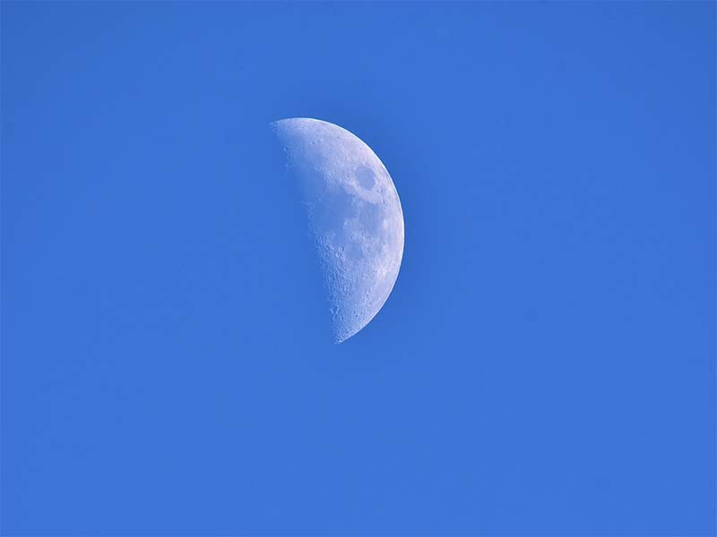

La mayoría de procesos astrofísicos no pueden ser recreados en los laboratorios de la Tierra. En cualquier caso, existe una gran variedad de objetos astronómicos visibles a lo largo de todo el espectro electromagnético. El estudio de dichos objetos mediante la adquisición pasiva de datos es el objetivo de la astronomía observacional.
El equipo y las técnicas necesarias para estudiar un fenómeno astrofísico pueden variar muchísimo. Muchos fenómenos astrofísicos de interés sólo pueden ser estudiados mediante el uso de tecnología muy avanzada y simplemente no se conocían hasta muy recientemente.
La mayoría de observaciones astrofísicas se realizan utilizando el espectro electromagnético.
La radioastronomía estudia radiaciones con una longitud de onda mayor que unos pocos milímetros. Las ondas de radio suelen se originadas por objetos fríos, incluyendo gas interestelar y nubes de polvo. La radiación cósmica de microondas de fondo es la luz del Big Bang con un corrimiento al rojo. Los púlsars fueron detectados por primera vez a través de microondas. El estudio de estas ondas requieren radiotelescopios muy grandes.
La astronomía infrarroja estudia las radiaciones con longitudes de onda demasiado largas para ser visibles pero más cortas que las ondas de radio. Las observaciones infrarrojas suelen realizarse con telescopios similares a los telescopios ópticos habituales. Objetos más fríos que las estrellas (como planetas) se estudian normalmente a frecuencias infrarrojas.
La astronomía óptica es el tipo más antiguo de astronomía. Los instrumentos más comunes son telescopios y espectroscopios. La atmósfera terrestre interfiere en mayor o menor medida con las observaciones ópticas, así que se utilizan ópticas adaptativas y telescopios espaciales para obtener la mayor calidad de imagen posible. En este rango, las estrellas son altamente visibles, y pueden observarse espectros químicos para estudiar la composición química de estrellas, galaxias y nebulosas.
La astronomía con rayos ultravioleta, rayos X y rayos gamma estudian procesos muy energéticos como púlsars binarios, agujeros negros, magnetars y muchos otros. Estos tipos de radiación no atraviesan la atmósfera terrestre, por lo que son estudiados desde telescopios espaciales como RXTE, el Observatorio de Rayos X Chandra y el Observatorio de rayos gamma Compton.
Aparte de la radiación electromagnética, pocas cosas originadas a grandes distancias pueden observarse desde la Tierra. Se han construido observatorios de ondas gravitacionales, pero éstas son extremadamente difíciles de detectar. También han sido construidos observatorios de neutrinos, principalmente para el estudio de nuestro propio Sol. Se pueden observar rayos cósmicos, consistentes en partículas de gran energía colisionando con la atmósfera terrestre.
Las observaciones pueden variar también según la escala de tiempo. La mayoría de observaciones ópticas llevan de varios minutos a horas, de manera que los fenómenos que cambian más rápidamente no pueden ser fácilmente observados. De cualquier manera, los datos históricos de algunos objetos están disponibles desde hace siglos o milenios. Por otro lado, las observaciones a través de radio pueden examinar eventos en escalas de milisegundos o combinar años de datos. La información obtenida desde diferentes escalas de tiempo es muy diferente.
El estudio de nuestro Sol ocupa un lugar especial en la astrofísica observacional. Debido a las enormes distancias del resto de estrellas, el Sol puede ser observado desde un lugar privilegiado incomparable al de ninguna otra estrella. La comprensión de nuestro propio Sol sirve de guía para la comprensión de otras estrellas.
La forma en que cambian las estrellas, o evolución estelar, suele representarse colocando las distintas variedades de estrellas en sus respectivas posiciones del diagrama Hertzsprung-Russell, que muestra los distintos estados de un objeto estelar, desde su nacimiento hasta su muerte. La composición material de los objetos astronómicos puede ser examinada utilizando:
Fotometría
Espectroscopia
Radioastronomía
Observatorio astronómico
Astronomía, José Luis Comellas. Editorial Rialp (1983).
Cosmos, Carl Sagan. Editorial Planeta (1980).
Curso de Astronomía general, Bakulin, Kononóvich y Moroz. Editorial MIR (1987).
{kind=link}